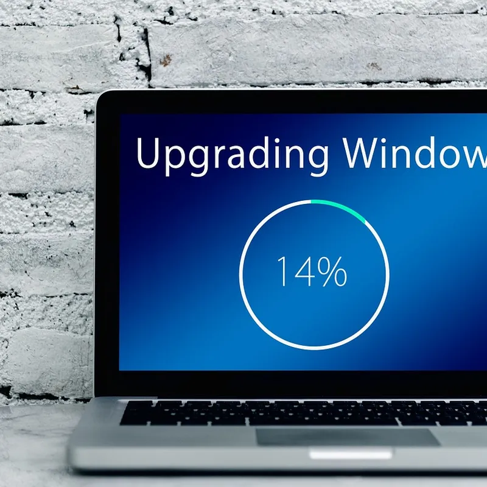

कोर्स › ACS डिजिटल मित्र: बुनियादी कौशल में प्रमाणपत्र › खंड-5: फ़ाइल, Email व Scanner
पाठ 5.13: Device Update रखना

📚 सब पाठ: किसी भी पाठ पर सीधे जाओ
इस पाठ के बाद तुम कर पाओगे: (1) मरम्मत-ताला-सुधार तिकड़ी, (2) फ़ोन/computer/app की update-जगहें, (3) चार-पहरे की update-रस्म, (4) official-स्रोत का लोहे का नियम, (5) नक़ली झाँसे पहचानकर ठुकराना।
update — मरम्मत, ताला, सुधार
सूचना झूलती है: "Update available" — आधी दुनिया महीनों टालती है: "चल तो रहा है।" update (अपडेट) = software-कंपनी की भेजी सुधरी प्रति — भीतर तीन चीज़ें: (1) मरम्मत — पकड़ी ग़लतियाँ (bug) ठीक: "app बार-बार बंद होता है" की दवा अक्सर update ही (5.10 की चौथी जड़ का इलाज); (2) ताला — सुरक्षा-छेद बंद: software में कमज़ोरियाँ मिलती रहती हैं जिनसे ग़लत इरादे वाले घुस सकते हैं; कंपनी छेद पकड़ते ही update में बंद करती है — पुराना software = खुले ताले वाला दरवाज़ा, और यह बात सबको पता होती है (खंड-6 इसी नींव पर — इसीलिए पाठ 6.07 से साझा); (3) सुधार — कभी-कभार नई सुविधा/रूप। सबसे भारी ताला: device में master (5.08), backup (5.09), Drive-चाबी (5.04) — update टालना इन पर खुला ताला छोड़ना। सूत्र: update ख़र्च नहीं, पहरेदारी है।
कहाँ-कहाँ — तीन जगहें
update तीन परतों में: (1) फ़ोन का system-update: Settings → System/Software update (न मिले तो खोज-पट्टी में "update" — 5.10 की तरकीब); (2) फ़ोन के apps: Play Store → profile-चिह्न → Manage apps → Update all; (3) computer: Settings → Windows Update — install के बाद प्रायः restart माँगता है; यहीं "Update and restart" टलते-टलते हफ़्ते बीतते हैं। साझी समझ: update किश्तों में आते हैं — छोटे मासिक (ज़्यादातर ताला-मरम्मत), साल में कभी बड़ा; छोटे ही असली पहरेदार। ईमानदार पंक्ति: बहुत पुराने device को किसी दिन कंपनी update देना बंद कर देती है — वह चलेगा, पर खुले ताले के साथ; उससे ग्राहक-data का काम धीरे-धीरे समेटो।
update-रस्म — चार पहरे
update "कभी भी, कैसे भी" नहीं — रस्म से (backup-रस्म की बहन): पहरा-1 — समय: ग्राहक-घंटों में कभी नहीं; केंद्र बंद/रात में — update में device आधा-एक घंटा व्यस्त रह सकता है; पहरा-2 — wifi/पर्याप्त data: update भारी होते हैं (सैकड़ों MB-GB) — mobile-data पर जेब कटती है; पहरा-3 — बिजली: battery आधे से ऊपर, computer की बिजली भरोसेमंद (बीच-update बिजली जाना software को बीमार कर सकता है — UPS की 5.11-सीख); पहरा-4 — पहले backup: बड़े update से पहले backup-रस्म — data "प्रायः" नहीं जाता, पर केंद्र "प्रायः" पर नहीं, तीन-प्रति जाली (5.09) पर चलता है। कामकाजी रूप: backup वाले तय दिन, उसके ठीक बाद update-जाँच — register की तीसरी बहन-पंक्ति। बाद में एक नज़र: device चालू, app ठीक, printer-जुड़ाव सलामत — अटपटा लगे तो 5.12 की report-भाषा तैयार।
लोहे का नियम — official स्रोत; झाँसे की पहचान
सबसे ज़रूरी पहरेदारी — नक़ली update का झाँसा: "update" शब्द का भरोसा ही ठग का औज़ार। लोहे का नियम: update सिर्फ़ तीन official दरवाज़ों से — Settings, Play Store, Windows Update। बाहर की हर पुकार जाँच का विषय: browser की उछली खिड़की "phone पुराना! अभी update!" — झाँसा (browser से system-update कभी नहीं आता); site का "video के लिए player update करें" बटन — प्रायः बीमार software उतरवाने की चाल; WhatsApp/SMS की "update-कड़ी" — official रास्ता कभी नहीं (असली update कड़ी से नहीं, Settings/Store में बैठकर मिलता है); बाहर से "APK"-फ़ाइल उतारकर "update" — Play Store के पहरे-बाहर की छलाँग, काम-के-device पर निषेध। अँगूठा-सूत्र: असली update इंतज़ार करता है, नक़ली हड़बड़ाता है — "अभी! तुरंत!" की भाषा ख़ुद चुग़ली खाती है (5.05 की phishing-हड़बड़ी से मिलाओ)। शक हो तो दरवाज़ा सीधा: खिड़की बंद, ख़ुद Settings/Store खोलो — update सच होगा तो वहाँ दिखेगा।
लाल खिड़की और सब्र वाला बटन (काल्पनिक उदाहरण)
मनोज (काल्पनिक नाम) के computer पर महीनों से Windows Update की सूचना झूलती थी — "बाद में" आदत बन गई थी; उधर फ़ोन के browser में लाल खिड़की उछली: "phone ख़तरे में! अभी update करें!" — उँगली बटन तक गई ही थी कि पाठ याद आया: browser से system-update कभी नहीं आता। खिड़की बंद, ख़ुद Settings → Software update — वहाँ लिखा: "Your software is up to date" — लाल खिड़की शुद्ध झाँसा थी; वह site दोबारा न खोलने की गाँठ बँधी। उसी शाम रस्म बनी: शनिवार backup के ठीक बाद — केंद्र बंद, wifi, UPS — Windows Update चला: 40 मिनट, दो restart; सुबह नज़र-जाँच — सब सलामत, और महीनों से अटकता PDF-reader अटकना बंद (मरम्मत-तिकड़ी हाथ-के-हाथ दिखी)। Update all रात चार्जिंग में चला। register की तीसरी पंक्ति: "backup किया · cache-सफ़ाई की · update किया"। copy में पंक्ति: "ठग की खिड़की लाल और हड़बड़ी में थी; असली update Settings में सब्र से बैठा था — यही पहचान है।"
अभ्यास — अ-52 (NIOS Practical 52 पर आधारित; mobile-full)
काम: (1) तीनों update-जगहें खोलो — System update स्थिति (चित्र) + Play Store की pending गिनती; computer मिले तो Windows Update भी, (2) रस्म से एक असली update (कम-से-कम Update all): चारों पहरे कैसे निभाए — चार पंक्तियाँ, (3) बाद की नज़र-जाँच — दो पंक्तियाँ, (4) register-पंक्ति "update किया — तारीख़" (चित्र), (5) झाँसा-तालिका: चार नमूने (browser-खिड़की · player-बटन · WhatsApp-कड़ी · APK) — हर एक के आगे "क्यों ✗" एक पंक्ति, (6) एक-पंक्ति: update-बंद पुराने device से ग्राहक-data का काम क्यों समेटें। अपेक्षित output: जगह-चित्र + रस्म-पंक्तियाँ + नज़र-जाँच + register-पंक्ति + झाँसा-तालिका + पुराना-device पंक्ति। रूब्रिक R-a-52 (10 अंक): तीनों जगहें = 2 · रस्म चारों पहरे = 3 · नज़र-जाँच + register = 1 · झाँसा-तालिका 4/4 = 3 · पुराना-device समझ = 1। पास = 6।
छोटा टेस्ट: 5 प्रश्न
हर प्रश्न में सही विकल्प छूकर जवाब दो। सही होने पर हरा, ग़लत पर लाल दिखेगा। बिना छुए जाँचना हो तो "उत्तर देखो" खोलो।
प्र-1. update के भीतर की तिकड़ी, और सबसे भारी कौन?
उत्तर देखो
उत्तर: (ग)। bug-मरम्मत + छेद बंद + सुधार; पुराना software = खुला दरवाज़ा — device में master-backup-Drive की चाबियाँ। बाक़ी क्यों ग़लत: (क/घ) रूप तिकड़ी का हल्का हिस्सा; (ख) जगह लेता है, बदले में पहरेदारी देता है।
प्र-2. update के तीन official दरवाज़े?
उत्तर देखो
उत्तर: (घ)। Settings का System update समेत तीन दरवाज़े — बाहर की हर पुकार जाँच का विषय। बाक़ी क्यों ग़लत: (ख/ग) browser/site से system-update कभी नहीं — मनोज की लाल खिड़की यही झाँसा; (क) असली update कड़ी से नहीं, Settings/Store में मिलता है।
प्र-3. update-रस्म के चार पहरे?
उत्तर देखो
उत्तर: (घ)। समय = ग्राहक-घंटे नहीं — चारों पहरे चार ताले: व्यस्त device, कटी जेब, बीच-update बिजली, बिना-जाली data। बाक़ी क्यों ग़लत: (ख) "कभी भी" ही ठप-केंद्र की जड़; (क) चार में से एक; (ग) रस्म ही update को सुरक्षित बनाती है।
प्र-4. browser में खिड़की उछली: "phone ख़तरे में! अभी update!" — सही क़दम?
उत्तर देखो
उत्तर: (क)। Software update में असली दिखेगा — हड़बड़ी की भाषा ख़ुद झाँसे की चुग़ली; मनोज के Settings में "up to date" मिला। बाक़ी क्यों ग़लत: (ग/घ) यही बटन/APK बीमार software की चाल; (ख) बंद phone जाँच नहीं, टालना है।
प्र-5. update और backup का रिश्ता?
उत्तर देखो
उत्तर: (ख)। तय दिन backup के बाद update-जाँच — जाली + ताला की जोड़ी। बाक़ी क्यों ग़लत: (क/घ) चौथा पहरा ही backup है; (ग) ताला चोरी रोकता है, जाली गिरने से बचाती — काम अलग, दोनों चाहिए।
अगला पाठ → 5.14: LLM से पहली जान-पहचान — झलक-मात्र।
वीडियो (Video)
इस पाठ का जाँचा-परखा वीडियो जल्द यहीं जुड़ेगा। तब तक दो जीवित रास्ते:
🎬 YouTube पर इस पाठ के वीडियो खोजें
(दोनों नई खिड़की में; वीडियो बिना भी पाठ पूरा। पढ़ाई कहीं नहीं रुकती।)